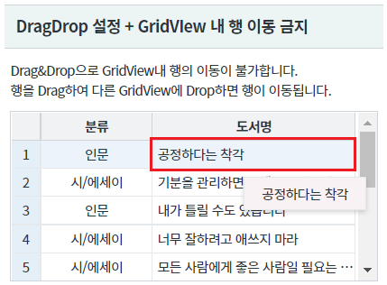
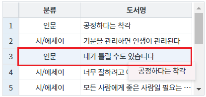
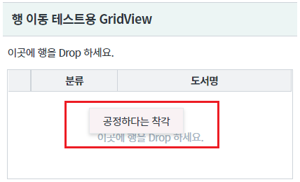
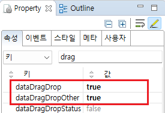
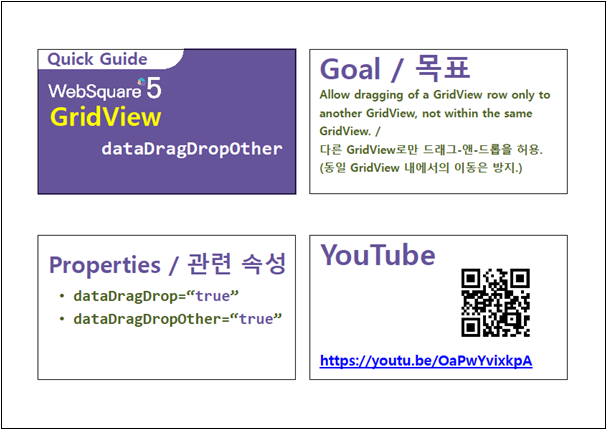

GridView의 Drag&Drop 기능의 옵션 중 하나인 "dataDragDropOther" 속성 예제입니다. 이 기능은 Drag&Drop 기능을 통한 GridView 내부에서의 행 이동을 금지하는 기능을 제공합니다.
DragDrop 설정 + GridVIew 내 행 이동 금지
GridView 내의 행을 Drag하여 GridView 내에서 Drop할 경우 이동되지 않음을 확인합니다.
[브라우저(Chrome) 실행 예시]

[브라우저(Chrome) 실행 예시]

Drag한 행이 이동되지 않음을 확인합니다.
[브라우저(Chrome) 실행 예시]
[브라우저(Chrome) 실행 예시]

Drag한 행이 이동됨을 확인합니다.
[브라우저(Chrome) 실행 예시]
GridView와 연결된 DataList 생성 및 연결 방법은 생략되었습니다.
GridView의 속성을 정의합니다.
[필수] dataDragDrop="true" //[default:false, true] 동일 gridView 또는 서로 다른 gridView 간의 데이터 드래그-앤-드롭을 허용
[필수] dataDragDropOther="true" //[default:false, true] 서로 다른 gridView 간의 데이터 드래그-앤-드롭만 허용할지 여부
그림 1.웹스퀘어5 SP5 스튜디오의 Property View(속성창) 예시

[소스 코드 예시]
<!-- gridView 의 소스 본문 예시 --> <w2:gridView dataDragDrop="true" dataDragDropOther="true" dataList="data:dlt_books_1"> <!-- 중략 --> </w2:gridView>
dataDragDrop
dataDragDropOther
[웹스퀘어5 SP5 개발 가이드] GridView
링크 : https://docs1.inswave.com/sp5_user_guide/86bdcf48029b958b
[웹스퀘어5 SP5 개발 가이드] GridView 행 드래깅
링크 : https://docs1.inswave.com/sp5_user_guide/86bdcf48029b958b#146e3c43f7e89d7e
[웹스퀘어5 SP5 개발 가이드] GridView 다른 GridView로의 드래깅만 허용 (dataDragDropOther)
링크 : https://docs1.inswave.com/sp5_user_guide/86bdcf48029b958b#1f2f007500bf0223
GridView 다른 GridView로의 드래깅만 허용 (dataDragDropOther)
링크 : https://youtu.be/OaPwYvixkpA
